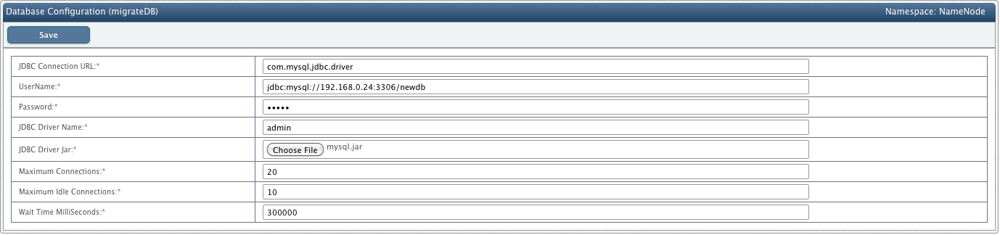
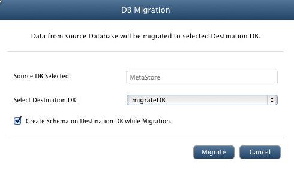
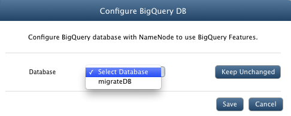
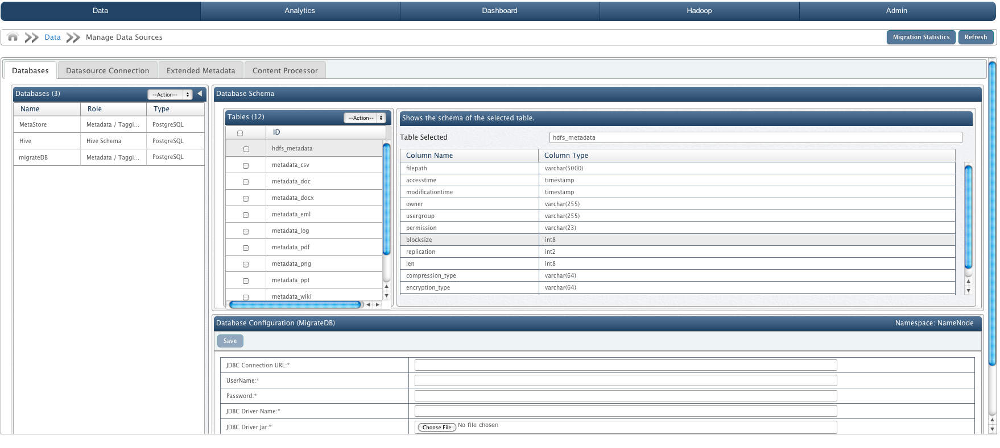

Database Migration Tutorial: PostgreSQL to MySQL
In this chapter
This chapter explains database migration process from PostgreSQL to MySQL.
Register MySQL Database to QueryIO
- You need to install and start MySQL database manually to add it to QueryIO for migration process.
- After MySQL has been successfully installed and started, create new database(say "newdb") in mysql.
- Now to register new database to QueryIO, navigate to Data > Manage Datasources > Manage Databases
- Select Add action from the dropdown at the top of the DBConnections tab.
- New DB Connection Name: Enter name for the connection as "migrateDB".
- Click on Save to create a new database configuration.
- Fill in the required database connection details in Database Configuration
- JDBC Connection URL: 'jdbc:mysql://<IP Address of system running database>:<Port for database>/<Database Name>, For example: 'jdbc:mysql://192.168.0.24:3306/newdb'.
- UserName: MySQL DB username say "admin".
- Password: MySQL DB connection password say "admin".
- JDBC Driver Name: "com.mysql.jdbc.Driver" for MySQL.
- JDBC Driver Jar: Select "mysql.jar" file.
- Click Save to update changes.

Migrate Database
After you have configured new database with QueryIO, following are the steps to migrate database:
- From the DB Connections tab, select the database that you want to migrate: MetaStore(by default database).
- From the dropdown at the top of the DB Connections tab, select Migrate. You will see the following window.
- Select Destination Database as "migrateDB", new database from dropdown
- Click on Migrate to migrate your database.
- You can see migration status in Migration Statistics.

Point NameNode to new Database
- Goto Hadoop > HDFS > NameNode.
- Select the NameNode to be configured with new database and click Configure
- Click Configure Database and select the new database to be linked with NameNode.

- Now restart the NameNode: First stop NameNode and then start NameNode.
You have successfully migrated from PostgreSQL to MySQL. You can view the tables from old database(MetaStore) have been migrated to new database(migrateDB).

Copyright © 2017 QueryIO Corporation. All Rights Reserved.
QueryIO, "Big Data Intelligence" and the QueryIO Logo are trademarks
of QueryIO Corporation. Apache, Hadoop and HDFS are trademarks of The Apache Software Foundation.